PARA가 옵시디언에서 자주 막히는 이유
옵시디언 커뮤니티에서는 '폴더 사용을 최소화하라'는 조언을 자주 해요. 그런데 우리는 평생 폴더로 파일을 정리해 왔어요. 폴더를 놓기가 어렵다 보니, 연결 기반 노트 작성도 폴더 정리도 어중간해져서 포기하는 경우가 많아요.
브라이언이 꼽는 대표적인 실패 사례가 PARA예요. 세컨드 브레인 개념을 대중화한 티아고 포르테가 『Building a Second Brain』에서 소개한 방법이에요. Projects·Areas·Resources·Archive 네 갈래로 지식뿐 아니라 삶 전체를 관리하자는 거예요.
PARA는 원래 폴더 체계예요
문제는 PARA가 폴더 분류로 나왔다는 점이에요. 포르테는 에버노트를 쓰던 시기에 이 분류를 만들었고, 에버노트에서는 노트 하나가 폴더 하나에만 들어갈 수 있었어요. 반면 옵시디언에서는 한 노트가 A 노트와도, B 노트와도 이어져요. 아래 그림의 왼쪽처럼 노트를 한 칸에 가두는 사고방식을 그대로 옮기면, 오른쪽 같은 연결의 이점을 살리기 어려워요.
그래도 폴더는 안 쓸 수 없어요. 너무 익숙하고, 파일을 나누는 가장 기본적인 체계니까요. 그래서 브라이언은 연결 기반 노트의 장점을 살리면서 쓸 수 있는 폴더 체계로, 2024년 11월부터 다듬어 온 ABCDE를 소개해요.
어떤 체계든 공통으로 필요한 폴더
어떤 폴더 체계가 가장 좋은지 정해진 답은 없어요. 사람마다 철학과 취향이 다르니까요. 다만 전략은 비슷하다고 해요.
아래는 브라이언이 구요한 교수님과 함께 진행하는 강의에서 쓰는 그림이에요. 왼쪽에 리브랜딩·결혼준비·커리어·철학처럼 관리하고 싶은 지식 영역이 있어요. 이것들이 가운데 상자로 모이는데, 상자 위쪽에 빨간 Inbox, 아래쪽에 빨간 유지보수 칸이 따로 붙어 있어요.
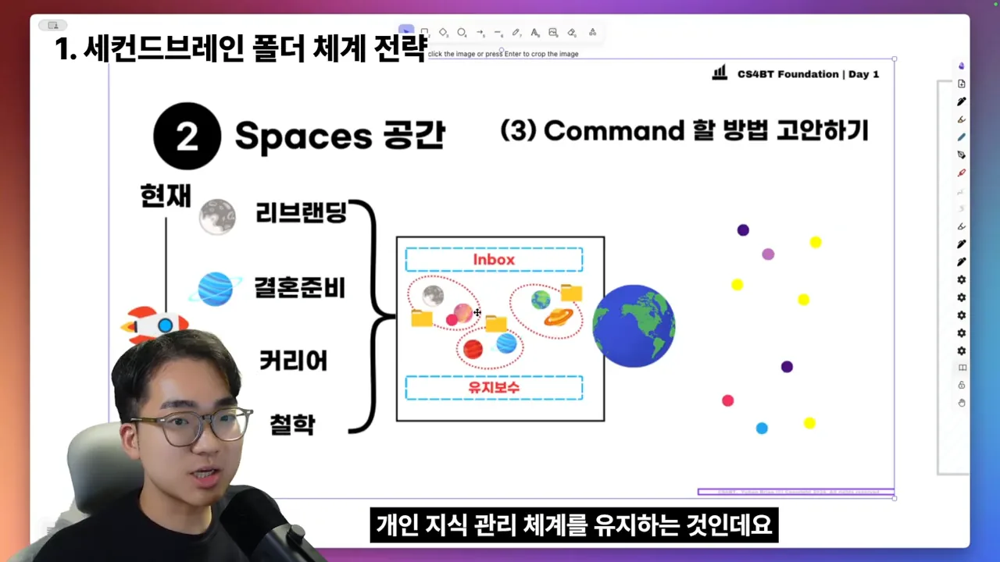
다음 그림은 같은 이야기를 더 직접적으로 정리해요. 위아래 점선 칸에 '공통'이라고 적힌 Inbox와 Maintence(유지보수)가 있어요. 유지보수 칸 옆에는 설정(Settings), 첨부파일(Attachments), 템플릿(Templates), 프롬프트(Prompts)가 적혀 있어요. 가운데 '나'와 '정답 없음' 칸 오른쪽에는 PARA와 ACE(Atlas, Calendar, Efforts)가 예시로 놓여 있어요.
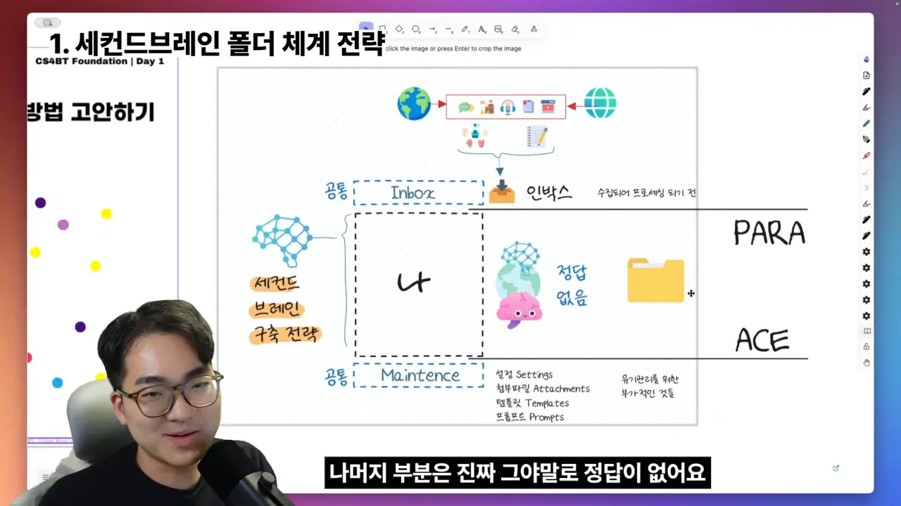
그래서 가운데는 정말 정답이 없어요. 브라이언은 예전에 ACE 템플릿을 쓰다가 지금은 ABCDE를 쓰고, 구요한 교수님은 00번부터 900번대까지 번호를 매긴 폴더를 써요. 브라이언 자신도 2022년부터 옵시디언을 쓰면서 폴더 체계를 서너 번 완전히 갈아엎었다고 해요.
폴더 체계에 철학을 담아야 하는 이유
폴더를 어떻게 짜든 가장 중요한 건 내 철학이 들어가는 거예요. 취향은 무엇이든 괜찮지만, 쌓이는 지식이 결국 나를 정의하고 삶을 굴리니까요. '지식을 어떤 과정으로 키울 것인가'가 폴더 구조에 드러나야 한다는 거예요.
확산과 수렴, 상향과 하향
브라이언은 개인 지식 관리를 확산적 사고와 수렴적 사고의 반복으로 봐요. 아래 슬라이드 아래쪽을 보면, 왼쪽 X에서 들어온 외부 지식이 가운데 마름모(확산적 사고 → 수렴적 사고)를 지나 오른쪽 Y로 나가요. 마름모 위의 빨간 점선이 하향식 사고('Top Down PKM'), 아래 파란 점선이 상향식 사고('Bottom UP PKM')예요.
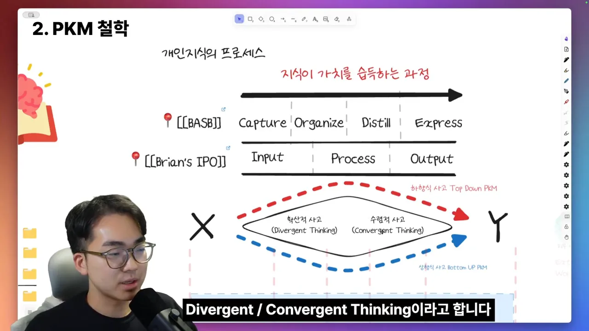
- 상향식 사고는 기록 하나에서 시작해 가치가 점점 더해지는 방식이에요.
- 하향식 사고는 여러 지식이 모여 MOC(Map of Content)나 네트워크를 이루면서 새로운 가치를 발견하는 방식이에요.
CODE, IPO와 같은 흐름이에요
슬라이드 위쪽 두 줄은 이 흐름이 다른 틀과 어떻게 겹치는지 보여 줘요. 브라이언의 설명을 표로 옮기면 이래요.
| 틀 | 들어오는 쪽 | 가공·연결 | 나가는 쪽 |
|---|---|---|---|
| 브라이언의 사고 흐름 | X (외부 지식) | 확산적 사고 → 수렴적 사고 | Y (새로운 지식) |
| CODE (포르테) | Capture | Organize · Distill | Express |
| IPO | Input | Process (연결되며 새 가치 발견) | Output (새 지식으로 탄생) |
브라이언은 Capture를 확산적 사고에, Distill과 Express를 수렴적 사고와 지식 응용에 가깝다고 봐요. IPO 역시 확산과 수렴을 일반화한 표현이라는 거예요. ABCDE 폴더는 바로 이 흐름을 폴더로 옮긴 것이에요.
ABCDE 다섯 폴더가 하는 일
A·B·C·D·E라는 순서는 지식이 들어와서 가치를 얻고 새 지식으로 밖에 나가는 흐름을 본떴어요. 동시에 각 폴더의 노트에 내가 얼마나 몰입하고 있는지, 얼마나 가치가 있는지도 나타내요.
슬라이드에서 상자 세 개가 겹쳐 있는 걸 보세요. 가장 바깥은 파란 상자, 그 안에 B·C·D에 걸친 초록 상자, 한가운데 Calendar에만 노란 상자가 있어요. 아래 초록 점선은 '몰입의 정도'로, C에서 가장 높고 양 끝으로 갈수록 내려가요. 왼쪽 위에는 예전에 쓰던 ACE 폴더(Atlas·Calendar·Efforts)가 작게 적혀 있어요.
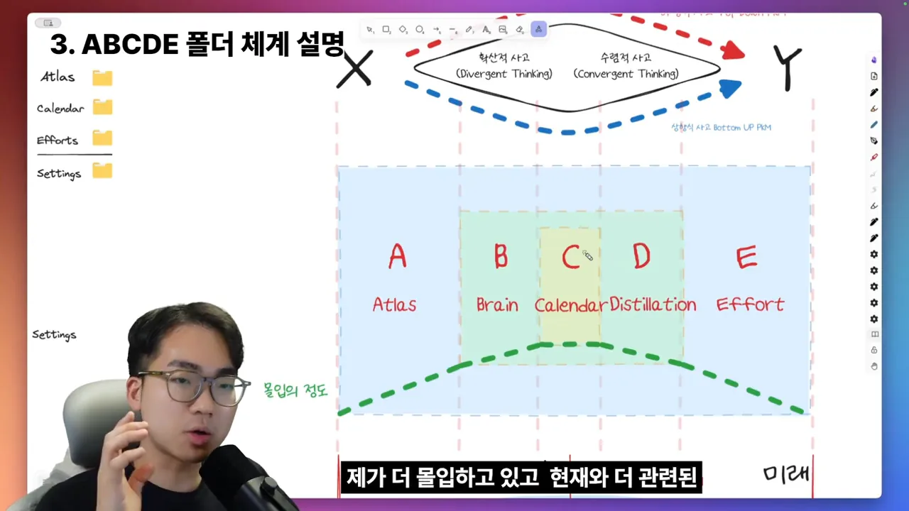
다섯 폴더에 들어가는 것
| 폴더 | 들어가는 것 | 영역 |
|---|---|---|
| A · Atlas | 외부 세계의 지식. 웹 아티클 원문, 영상 트랜스크립트, 다른 사람의 생각을 받아 적고 요약한 것 | 지식 관리 |
| B · Brain | 그중 내 생각을 한 번 거쳐 걸러진 것. 온전한 나의 생각과 창의적 사고 | 지식 관리 |
| C · Calendar | 지금 이 순간 집중하는 것, 시간을 기준으로 하는 기록. 일기, 플래너, 데일리 노트, 위클리 노트, 회고 | 모든 폴더의 기준 |
| D · Distillation | A·B의 지식이 이어져 콘텐츠 아이디어를 내거나 초안을 쓰는 곳. 아직 밖에 공개하지 않아요 | 생산성 |
| E · Efforts | D에서 만든 것이 밖으로 공개될 때 가는 곳 | 생산성 |
D는 이름 그대로 '증류'가 일어나는 곳이에요. A와 B의 지식이 모여 졸여지면서 가치가 올라가요. 다만 초안이라서 Brain처럼 밖에는 보이지 않아요.
흐름으로 다시 그리면
브라이언의 설명을 흐름으로 옮기면 아래와 같아요. A·B에서 쌓은 잠재적 가치가 D로 모이고, E에서 실현돼요. A·B는 지식 관리, D·E는 실제로 경제적 가치를 가져다주는 생산성 영역이에요. 그리고 A부터 E까지 그 순간 하는 일은 모두 C에 기록해요. 그래서 C를 기준으로 나머지 네 폴더가 이어져요.
바깥 세상, 내부 세계, 지금의 나
같은 상자를 다르게 읽을 수도 있어요. 파란 상자는 내 머리 바깥에서 내가 관찰하는 세상이에요. 초록 상자는 머릿속에 들어온 내부 세계, 노란 상자는 그보다 더 안쪽에 있는, 지금 몰입하고 있는 나 자신이에요. 아래 슬라이드는 초록 상자를 빨간 테두리로 감싸고 '머릿속의 내부 세계'라고 적어 뒀어요.
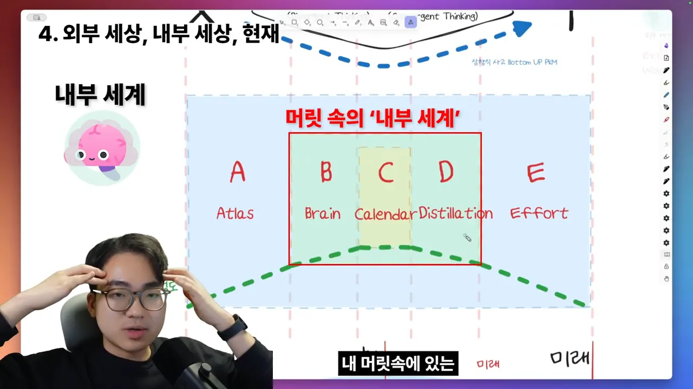
시간으로 본 ABCDE: 지식 관리와 생산성
앞에서 ABCDE를 지식 관리(A·B)와 생산성(D·E)으로 나눴어요. 브라이언은 그 기준을 시간에서 가져와요. 삶을 나누는 방법은 여러 가지지만, 그가 보기에 가장 중요한 차원은 시간이에요.
슬라이드는 가운데 세로선 '현재'를 기준으로 왼쪽에 과거, 오른쪽에 미래를 놓아요. 로켓이 있는 노란 원에서 왼쪽 화살표 아래에는 '지식'과 '지식관리', 오른쪽 화살표 아래에는 '행동(Action)'과 '생산성'이 적혀 있어요.
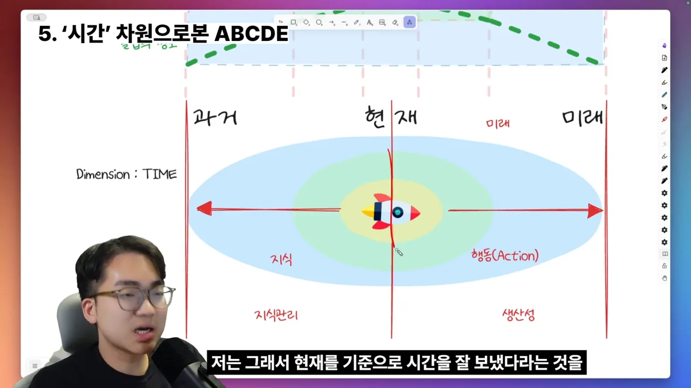
과거는 기록으로, 미래는 행동으로
- 지식 관리(과거 쪽): 지금 이 순간 읽고 소비하고 생각한 것은 기록하지 않으면 날아가요. 그 순간을 잘 보냈다는 걸 기록으로 남기는 게 지식 관리예요.
- 생산성(미래 쪽): 다가올 시간을 가장 가치 있게 쓰려면 그때 무엇을 할지 행동을 관리해야 해요. 그 행동을 효율적으로 하는 게 생산성이에요.
물론 현재는 딱 잘라 정의하기 어려워요. 방금 한 말도 이미 과거니까요. 그래도 현재를 기준으로 삼으면 두 영역이 깔끔하게 갈려요.
두 영역은 결국 이어져요
지식 관리와 생산성은 따로 놀지 않아요. 과거에 공부한 내용을 미래의 시험에 쓰고, 예전에 책에서 본 마케팅 사례를 나중에 사업이나 프로젝트에 써먹을 수 있어요. 과거 지식이 미래 행동에 다시 쓰이는 거예요. 그래서 A·B의 지식은 D의 초안, E의 공개 결과물과 자연스럽게 이어져요.
왜 Calendar가 한가운데일까요
아래 슬라이드에서 빨간 세로선이 위쪽 C 칸에서 아래쪽 '현재'까지 곧게 내려와요. ABCDE 상자의 Calendar와 시간 축의 현재가 같은 자리라는 뜻이에요.
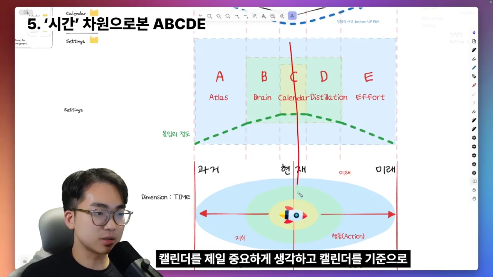
기록도 중요하고 계획도 중요하지만, 지금 이 순간에 몰입하지 않고 시간을 가치 있게 보내지 않으면 다 소용없다는 게 브라이언의 생각이에요. 그래서 Calendar를 가장 중요하게 보고, Calendar를 기준으로 ABCDE를 짰어요.
결국에는 현재이 순간에 몰입을 하지 않고 제일 가치 있게 시간을 보내지 않으면은 모든게 다 무용지물이더라고요.
— 영상 18:06
실제 볼트: 인박스와 Atlas
여기서부터는 브라이언의 실제 옵시디언 볼트를 열어 보여 줘요. 화면 오른쪽 목록에는 최상위 폴더와 노트 개수가 나와요. 인박스(+) 551, Atlas 1799, Brain 325, Calendar 2611, Distillation 59, Efforts 670, Settings 593이에요. 맨 위 _NoteCompanion 같은 폴더는 AI(Artificial Intelligence) 플러그인을 시험하려고 만든 것이라 쓰지 않아요.
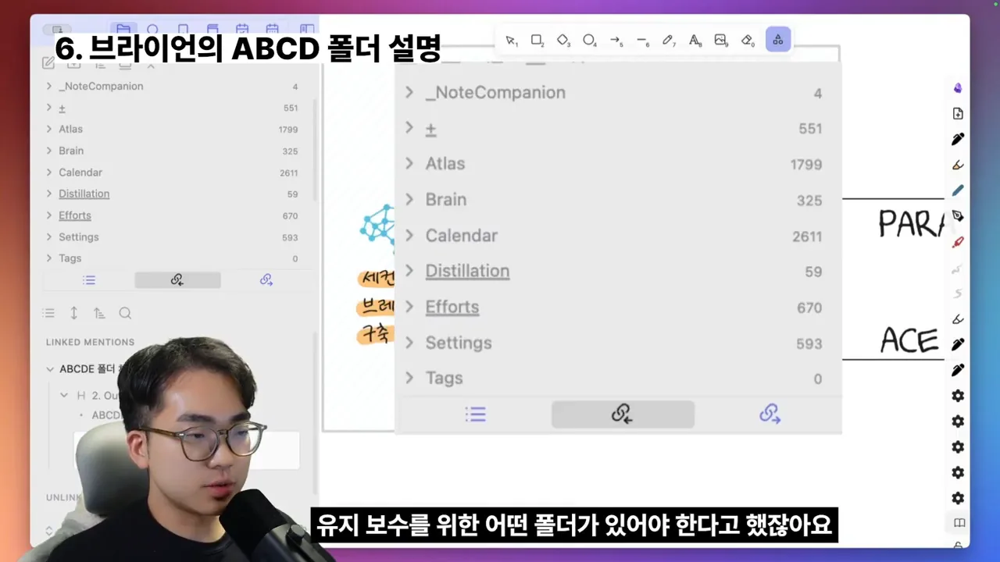
정리 안 된 인박스 551개
인박스에는 노트가 551개 쌓여 있어요. 그중 100개쯤은 제목 없는 노트나 아직 다듬지 않은 플리팅 노트일 거라고 해요. 그래도 브라이언은 불편하지 않다고 해요. 대부분 노트에서 링크를 타고 다른 노트로 넘어가며 찾기 때문에, 원하는 걸 찾을 수만 있으면 큰 문제가 아니라는 거예요. 인박스 안에는 하위 폴더도 따로 없어요.
Atlas: 외부 세계의 지식
Atlas는 온전한 내 지식이 아니라 밖에서 받아들인 것들이에요. 아래 화면은 Atlas 안의 Archive를 펼친 모습이에요. Notion 453, Second Brain 723, Zotero - old 276처럼 예전 도구와 예전 볼트에서 가져온 노트가 하위 폴더로 나뉘어 있어요.
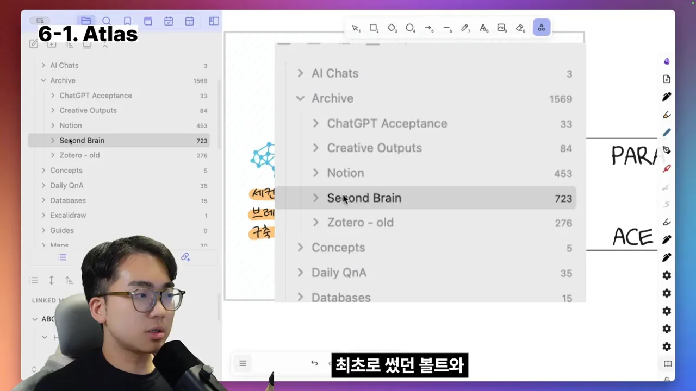
Maps 폴더에는 MOC가 모여 있어요. 화면에서 펼친 Maps 아래로 6 Horizon Pyramid, Book on a page, Bookshelf, Digital Garden Map 같은 노트 이름이 보여요. MOC는 특정 종류의 노트를 이어 둔 메뉴판 같은 노트예요.
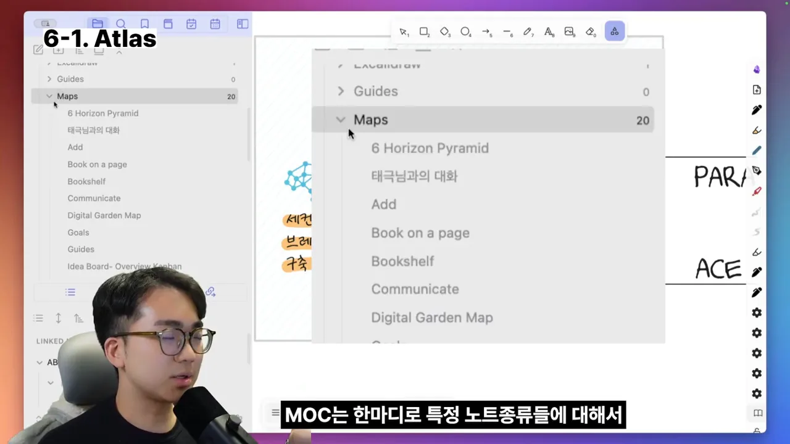
Sources는 외부에서 원문 그대로 가져와 저장한 것이에요. 화면에서 Sources는 144개로, Atlas 하위 폴더 중 Archive 다음으로 커요. 바로 위 People은 2개뿐인데, 사람은 링크로 늘 이어 두기 때문에 정말 관리가 필요할 때만 따로 노트를 만든다고 해요.
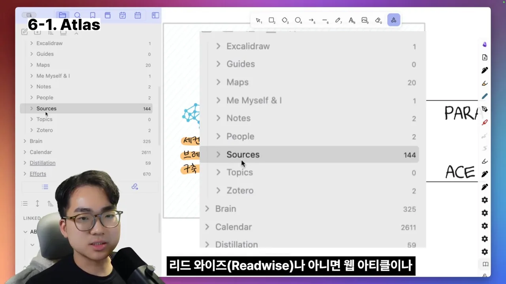
나머지 하위 폴더는 이렇게 쓰여요.
- AI Chats: 옵시디언 AI 플러그인과 나눈 대화 목록
- Concepts: 새로 배운 개념을 적는 컨셉 노트. 아직 실험 중이에요
- Daily QnA: 운영하는 노트 챌린지와 관련된 글
- Databases: Dataview 플러그인으로 만든 노트와 데이터베이스
- Notes: 원래 내 생각 노트가 모두 여기 있었는데, 지금은 Brain으로 옮겼어요
- Topics: 키워드와 태그를 한눈에 모아 보는 토픽 노트. 만들어 가는 중이에요
- Zotero: Zotero에서 읽고 가져온 논문 노트. 요즘은 논문을 덜 읽어서 대부분 Archive에 있어요
Brain과 Calendar
Brain: 온전한 내 생각
Brain에는 온전한 내 생각과 취향, 내가 재구성한 것들이 들어가요. 화면에서 Brain을 펼치면 Archive 0, Daily QnA 103, Me Myself & I 36, Notes - To Organize 176, Reformulations 2, Zettels 8이 보여요.
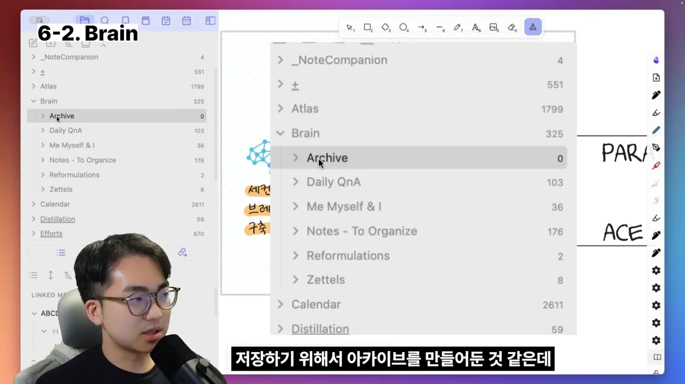
- Archive: 예전 버전 노트를 담으려고 만들었지만, Atlas에 이미 Archive가 있어서 영상 중에 바로 지웠어요.
- Daily QnA: One Month Note 챌린지 글이에요. 매일 나에 대한 질문 하나에 답하는 노트 쓰기 챌린지예요.
- Me Myself & I: 삶에 큰 변화가 있을 때 나 자신에게 하는 깊은 성찰을 담아요.
- Notes - To Organize: 예전 체계의 Notes에서 Brain으로 옮기면서 아직 정리하지 못한 노트예요.
- Zettels: 제텔카스텐에서 말하는 노트예요. 지금 8개뿐인 건 대부분 인박스에 둔 채 옮기지 않아서예요. 찾는 데 불편이 없어서 정리를 미뤄 왔다고 해요.
Calendar: 지금 이 순간의 기록
Calendar는 2,600개가 넘어서 노트가 가장 많아요. 지금 이 순간을 기록하는 걸 가장 중요하게 여긴다는 게 숫자로 드러나요. 아래 화면에서 Calendar 2611 아래로 Archive 829, Events 1, Goals 159, Journals 508, Logs 503이 보여요.
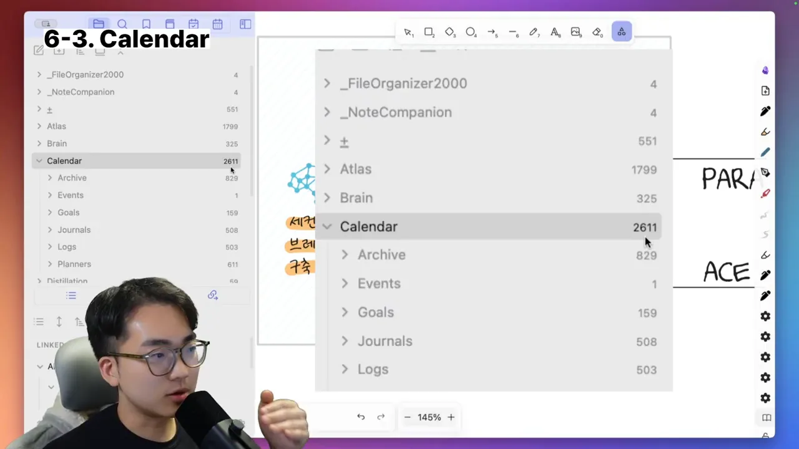
- Archive: 옛 노트를 가져와 일단 보관한 곳
- Events: 구글 캘린더 일정과 그 행사 관련 노트를 이으려던 폴더
- Goals: 연간·분기·월간 목표와 각 목표의 내용. 예를 들면 책 원고, 개인 브랜딩
- Journals: 일기
- Logs: 날짜별 데일리 로그
- Planners: 일간·주간·월간·분기 계획과 회고
Logs를 펼치면 2023-09-20, 2023-09-21처럼 날짜가 제목인 노트가 줄지어 있어요. 브라이언은 여기에 불렛 저널의 아웃라인 형식을 빌려 쓴다고 해요.
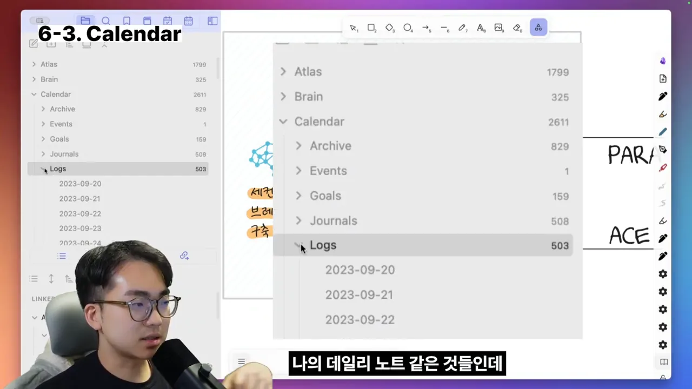
Distillation, Efforts, 그리고 폴더 깊이
Distillation: 아이디어와 초안
Distillation에는 지금 Drafts 12와 Ideas 46, 두 폴더만 있어요.
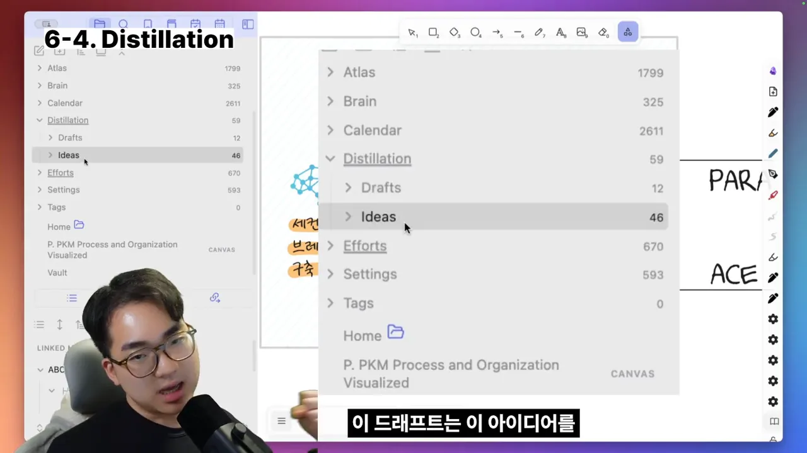
- Ideas: Atlas와 Brain에서 읽고 쓴 노트가 이어져서 콘텐츠 아이디어가 모이는 허브예요. 리서치도 하고 아웃라인도 적어요.
- Drafts: 그 아이디어를 실제 초안으로 쓰는 노트예요. 주로 글 형태의 콘텐츠예요.
Efforts: 밖으로 나가는 노트
Efforts는 밖에 공유되고 경제적 가치를 가져다주는 노트가 모이는 곳이에요. 브라이언도 아직 아주 체계적이진 않다고 해요. 아래 화면은 Cards를 펼친 모습이에요. Career Prep 64, Presentations 26 폴더 아래로 '좋은 노트하기 전략', '생각있는 일잘러 신입이 되는 비법' 같은 발표·강의용 노트가 보여요.
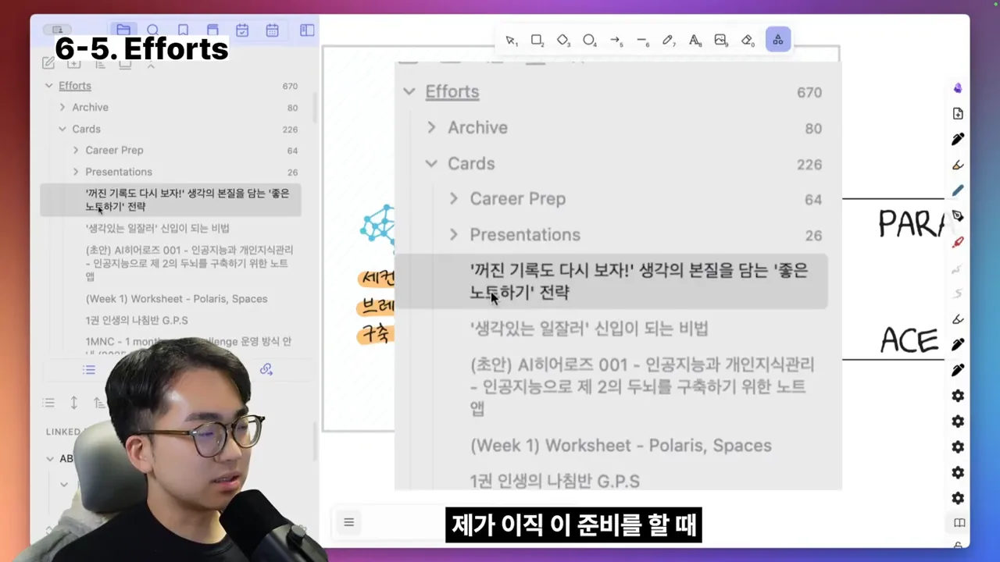
Projects는 PARA의 프로젝트와 같은 개념인데, 지금 쏟는 에너지에 따라 하위 폴더로 나눴어요. 화면에서 Not Started 7, On 8, Ongoing 4, Simmering 3, Sleeping 3이 보이고, 왼쪽 목록에는 Tackled 23도 있어요.
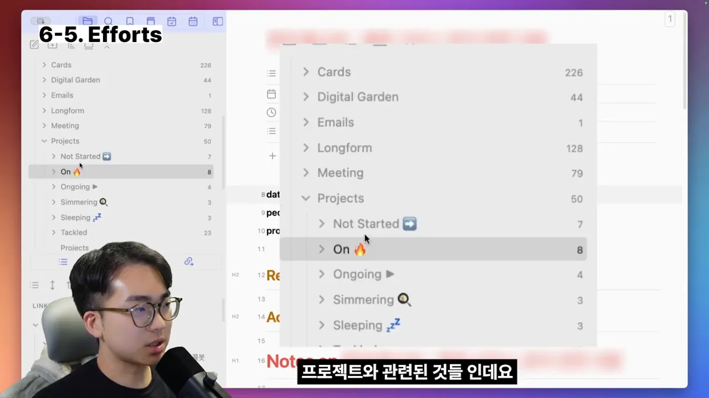
프로젝트에 들어가면 프로젝트 노트 하나에서 그 프로젝트와 연결된 모든 노트를 한 번에 봐요. 아래는 On 폴더의 '나는 고수다 - 생성형 ai 강의.project' 노트예요. 위쪽에 type, tags, status, target_date, priority 같은 속성이 있고, 본문에서는 Dataview로 연결된 노트를 모아 보여 줘요.
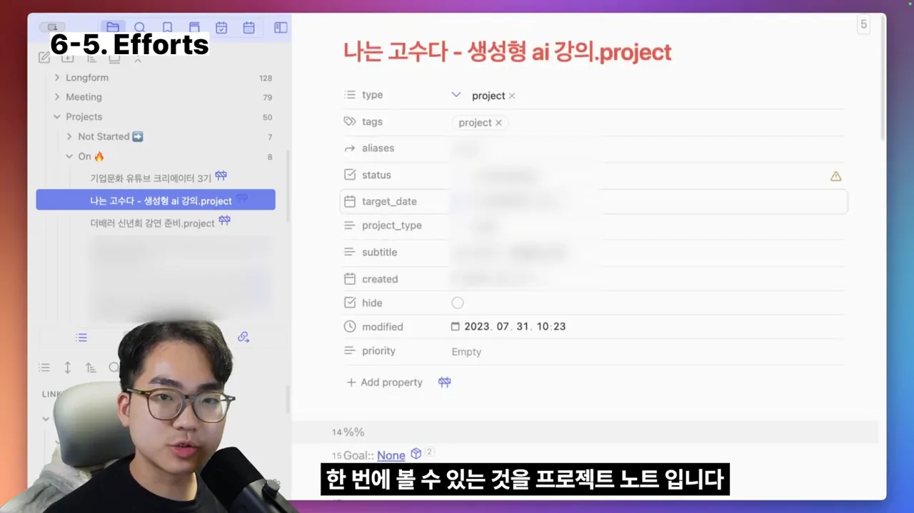
| Efforts 하위 폴더 | 들어가는 것 |
|---|---|
| Archive | 예전 시스템에서 가져온 노트 |
| Cards | 밖에 공유할 노트의 재료. 이직 준비, 외부 발표 때 쓴 실용적인 노트 |
| Longform | 책 원고나 긴 블로그 글처럼 긴 글을 쓸 때의 노트 |
| Meeting | 대면·비대면 회의 노트 |
| Projects | 프로젝트 노트. 에너지 상태별 하위 폴더로 나눠요 |
| Tasks | 프로젝트를 밀고 나가기 위한 실제 행동과 중간 작업물 |
Settings와 폴더 깊이
마지막 Settings는 공통 유지보수 폴더예요. 화면에는 Attachments 165, Excalidraw 24, File Class 28, Fonts 0, Others 3, Prompts 11, Properties 17, Templates 66이 보여요. 다른 사람의 볼트를 참고용으로 담아 둔 것도 여기 있어요.
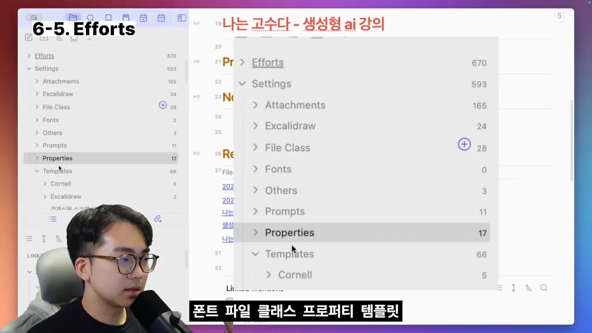
끝으로 폴더 깊이에 대한 기준을 말해요. 필요하지 않으면 2단계 아래로 내려가지 않는 게 좋다고 봐요. 너무 복잡해지니까요. 브라이언도 대부분 2단계까지만 쓰고, 아카이브 같은 특정 폴더만 3~4단계까지 써요.